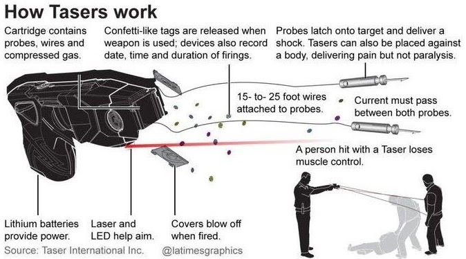
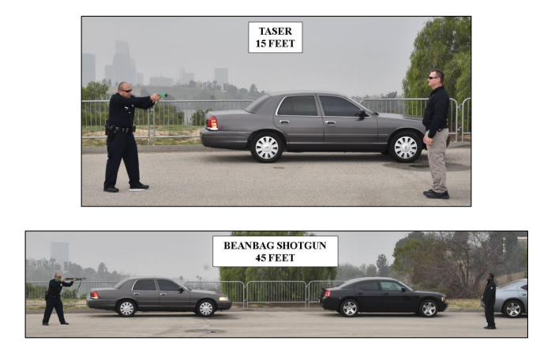
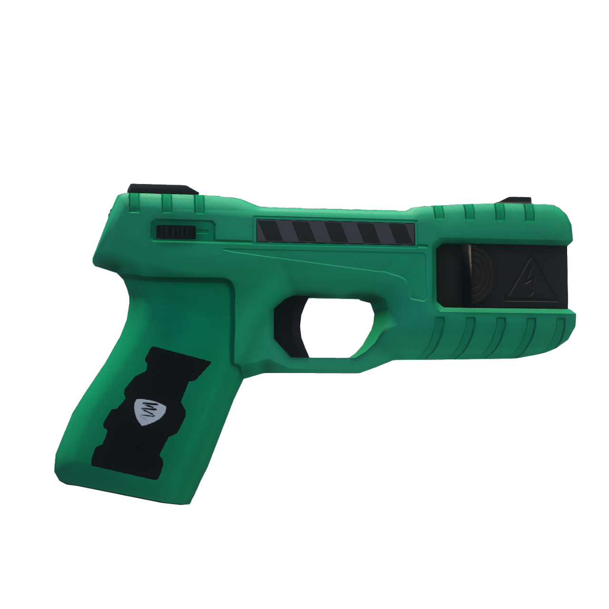
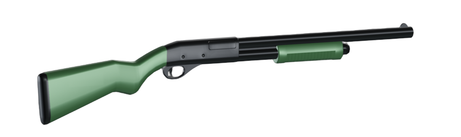

UTILISATION DE LA FORCE

Force Investigation Division
La mission du Los Santos Police Department est de protéger la vie et les biens des citoyens de San Andreas que nous servons, de réduire l'incidence de la crainte de la criminalité et de renforcer la sécurité publique tout en travaillant avec les diverses communautés pour améliorer leur qualité de vie. Tout cela avec honneur et intégrité, tout en nous conduisant selon les normes éthiques les plus élevées afin de maintenir la confiance accordée par les citoyens et faire respecter au mieux la justice.
Politique
Le Département a pour politique d'employer la force qui est «objectivement raisonnable» pour :
- Se défendre
- Défendre les autres
- Effectuer une arrestation ou une détention
- Empêcher l'évasion
- Surmonter la résistance
- Echapper à une menace directe à la vie
Armes non-létales
Distances :
- 15 FEET = 4.5 mètres
- 45 FEET = 15 mètres
A savoir : Le Los Santos Police Department est équipé d'armes non-létales de couleur verte (très visible) afin d'aider les enquêteurs à déterminer si l'utilisation d'une arme létale a été faite ou non. Il en va de même pour rassurer les citoyens lors d'une intervention.
|

|

|
Axon X26 TaserLe taser est une arme incapacitante qui est portée par tous les officiers lors de leurs temps de patrouille. Il tire deux électrodes en métal, qui viennent à se planter dans la chair, pénétrant le textile si il le faut, causant une incapacité neuromusculaire durant environ 1 à 2 minutes en délivrant une charge de 50'000 V. |

|
Beanbag Shotgun Remington 870Fusil à pompe de couleur verte et non-létal, le Beanbag projette des cartouches en tissu épais, accompagné de petites billes de métal afin d'avoir un impact correct sur le corps. |

|